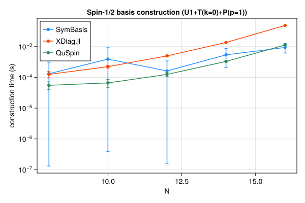
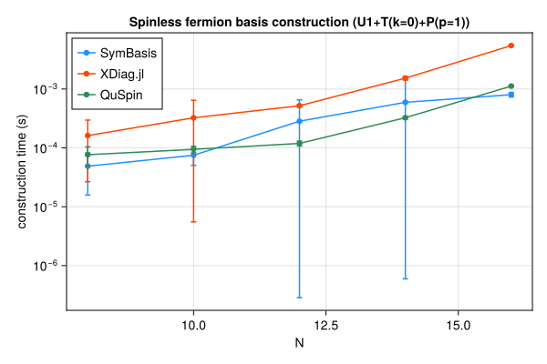
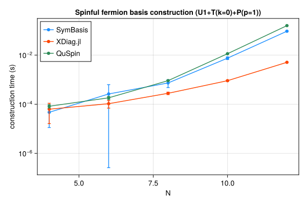
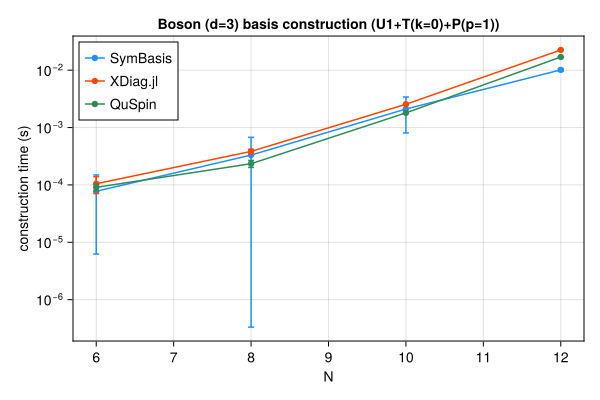

Symmetry-resolved basis construction and representative-state lookup speed, compared against XDiag.jl and QuSpin. SymBasis is benchmarked against its own dev checkout; XDiag.jl and QuSpin are whatever their latest released versions were at the time this page was generated. Regenerated automatically on every SymBasis release.
Threads are left at each library's own defaults (JULIA_NUM_THREADS=auto, OMP_NUM_THREADS unset) rather than pinned to 1 – these numbers reflect out-of-the-box performance, not a strictly single-threaded comparison.
Sweep: BENCH_SWEEP=quick
plot_construction("spin", "Spin-1/2")

| N | config | dim | SymBasis | XDiag | QuSpin | XDiag/SymBasis | QuSpin/SymBasis |
|---|
| 8 | U1 | 70 | 9.694e-05 ± 0.00011 s | 4.544e-06 ± 6.7e-06 s | 4.032e-05 ± 2.2e-05 s | 0.05x | 0.42x |
| 8 | U1+T(k=0) | 10 | 4.52e-05 ± 4e-05 s | 5.237e-05 ± 2.9e-05 s | 4.752e-05 ± 1.3e-05 s | 1.16x | 1.05x |
| 8 | U1+T(k=0)+P(p=1) | 8 | 0.0001313 ± 0.00018 s | 0.000125 ± 2.9e-05 s | 5.517e-05 ± 1.6e-05 s | 0.95x | 0.42x |
| 10 | U1 | 252 | 3.409e-05 ± 3.5e-05 s | 4.36e-06 ± 6.6e-06 s | 3.415e-05 ± 8e-06 s | 0.13x | 1.00x |
| 10 | U1+T(k=0) | 26 | 0.0001469 ± 0.00024 s | 0.0001006 ± 2.4e-05 s | 5.271e-05 ± 9e-06 s | 0.69x | 0.36x |
| 10 | U1+T(k=0)+P(p=1) | 16 | 0.0003916 ± 0.00056 s | 0.0002229 ± 2.2e-05 s | 6.599e-05 ± 1.8e-05 s | 0.57x | 0.17x |
| 12 | U1 | 924 | 9.345e-05 ± 0.0001 s | 4.881e-06 ± 6.8e-06 s | 4.724e-05 ± 1.6e-05 s | 0.05x | 0.51x |
| 12 | U1+T(k=0) | 80 | 0.0001956 ± 0.00032 s | 0.0002792 ± 2.5e-05 s | 9.053e-05 ± 1.1e-05 s | 1.43x | 0.46x |
| 12 | U1+T(k=0)+P(p=1) | 50 | 0.0001613 ± 0.00018 s | 0.0004981 ± 2.2e-05 s | 0.0001246 ± 1.9e-05 s | 3.09x | 0.77x |
| 14 | U1 | 3432 | 0.000105 ± 2.9e-05 s | 5.177e-06 ± 6.9e-06 s | 6.678e-05 ± 9.1e-06 s | 0.05x | 0.64x |
| 14 | U1+T(k=0) | 246 | 0.0003668 ± 0.00058 s | 0.001342 ± 0.0012 s | 0.000229 ± 1.3e-05 s | 3.66x | 0.62x |
| 14 | U1+T(k=0)+P(p=1) | 133 | 0.0005382 ± 0.00033 s | 0.001361 ± 3.6e-05 s | 0.0003296 ± 1.4e-05 s | 2.53x | 0.61x |
| 16 | U1 | 12870 | 0.0008977 ± 0.00065 s | 7.175e-06 ± 8.7e-06 s | 0.0001503 ± 9.2e-06 s | 0.01x | 0.17x |
| 16 | U1+T(k=0) | 810 | 0.000577 ± 0.00035 s | 0.003784 ± 0.00014 s | 0.0007506 ± 1.4e-05 s | 6.56x | 1.30x |
| 16 | U1+T(k=0)+P(p=1) | 440 | 0.0009365 ± 0.00032 s | 0.004862 ± 4.9e-05 s | 0.001125 ± 1.1e-05 s | 5.19x | 1.20x |
| N | config | nsamples | SymBasis | XDiag | QuSpin |
|---|
| 16 | U1+T(k=0)+P(p=1) | 10000 | 2.995e-07 ± 2.2e-09 s | N/A (no decoupled API) | 1.788e-07 ± 1.3e-09 s |
plot_construction("fermion", "Spinless fermion")

| N | config | dim | SymBasis | XDiag | QuSpin | XDiag/SymBasis | QuSpin/SymBasis |
|---|
| 8 | U1 | 70 | 5.143e-05 ± 5.6e-05 s | 4.644e-06 ± 6.6e-06 s | 5.015e-05 ± 1.9e-05 s | 0.09x | 0.98x |
| 8 | U1+T(k=0) | 9 | 7.898e-05 ± 5.9e-05 s | 5.471e-05 ± 2.6e-05 s | 6.468e-05 ± 1.4e-05 s | 0.69x | 0.82x |
| 8 | U1+T(k=0)+P(p=1) | 6 | 4.881e-05 ± 3.3e-05 s | 0.0001616 ± 0.00014 s | 7.656e-05 ± 2.7e-05 s | 3.31x | 1.57x |
| 10 | U1 | 252 | 0.0001046 ± 0.00024 s | 4.585e-06 ± 6.7e-06 s | 4.919e-05 ± 9.4e-06 s | 0.04x | 0.47x |
| 10 | U1+T(k=0) | 26 | 0.0003418 ± 0.00094 s | 0.0001112 ± 2.3e-05 s | 7.84e-05 ± 1.5e-05 s | 0.33x | 0.23x |
| 10 | U1+T(k=0)+P(p=1) | 16 | 7.499e-05 ± 2.5e-05 s | 0.0003249 ± 0.00032 s | 9.442e-05 ± 1.2e-05 s | 4.33x | 1.26x |
| 12 | U1 | 924 | 7.324e-05 ± 6.2e-05 s | 5.016e-06 ± 6.6e-06 s | 6.341e-05 ± 1.3e-05 s | 0.07x | 0.87x |
| 12 | U1+T(k=0) | 76 | 9.761e-05 ± 2.2e-05 s | 0.000308 ± 3.1e-05 s | 0.0001157 ± 2.9e-05 s | 3.16x | 1.19x |
| 12 | U1+T(k=0)+P(p=1) | 33 | 0.0002841 ± 0.00037 s | 0.0005206 ± 2.6e-05 s | 0.0001189 ± 1.1e-05 s | 1.83x | 0.42x |
| 14 | U1 | 3432 | 0.0002165 ± 7.8e-05 s | 5.411e-06 ± 6.5e-06 s | 6.627e-05 ± 9.3e-06 s | 0.02x | 0.31x |
| 14 | U1+T(k=0) | 246 | 0.0001685 ± 2.7e-05 s | 0.001091 ± 3.9e-05 s | 0.0002231 ± 1.6e-05 s | 6.47x | 1.32x |
| 14 | U1+T(k=0)+P(p=1) | 113 | 0.0005946 ± 0.00095 s | 0.00153 ± 0.00011 s | 0.0003256 ± 1.5e-05 s | 2.57x | 0.55x |
| 16 | U1 | 12870 | 0.001126 ± 0.00098 s | 7.171e-06 ± 8.8e-06 s | 0.0001472 ± 9.4e-06 s | 0.01x | 0.13x |
| 16 | U1+T(k=0) | 809 | 0.0007881 ± 0.00054 s | 0.004365 ± 4.4e-05 s | 0.0007295 ± 1.3e-05 s | 5.54x | 0.93x |
| 16 | U1+T(k=0)+P(p=1) | 422 | 0.000802 ± 7.1e-05 s | 0.005479 ± 4.1e-05 s | 0.001121 ± 8.8e-06 s | 6.83x | 1.40x |
| N | config | nsamples | SymBasis | XDiag | QuSpin |
|---|
| 16 | U1+T(k=0)+P(p=1) | 10000 | 3.586e-07 ± 2.3e-09 s | N/A (no decoupled API) | 1.862e-06 ± 4e-09 s |
plot_construction("spinful_fermion", "Spinful fermion")

| N | config | dim | SymBasis | XDiag | QuSpin | XDiag/SymBasis | QuSpin/SymBasis |
|---|
| 4 | U1 | 36 | 5.547e-05 ± 6.6e-05 s | 5.82e-06 ± 9e-06 s | 6.138e-05 ± 1.3e-05 s | 0.10x | 1.11x |
| 4 | U1+T(k=0) | 10 | 0.0001034 ± 8.6e-05 s | 3.612e-05 ± 3.2e-05 s | 7.428e-05 ± 1.1e-05 s | 0.35x | 0.72x |
| 4 | U1+T(k=0)+P(p=1) | 6 | 4.703e-05 ± 3.6e-05 s | 6.284e-05 ± 4.7e-05 s | 8.283e-05 ± 1.3e-05 s | 1.34x | 1.76x |
| 6 | U1 | 400 | 0.0001017 ± 6.7e-05 s | 5.421e-06 ± 9.6e-06 s | 6.712e-05 ± 1e-05 s | 0.05x | 0.66x |
| 6 | U1+T(k=0) | 68 | 0.0005125 ± 0.00082 s | 5.377e-05 ± 3.5e-05 s | 0.000128 ± 1.2e-05 s | 0.10x | 0.25x |
| 6 | U1+T(k=0)+P(p=1) | 38 | 0.0002621 ± 0.00036 s | 0.0001052 ± 3.6e-05 s | 0.0001826 ± 2.5e-05 s | 0.40x | 0.70x |
| 8 | U1 | 4900 | 0.00035 ± 0.00032 s | 5.747e-06 ± 9.9e-06 s | 0.0001232 ± 1e-05 s | 0.02x | 0.35x |
| 8 | U1+T(k=0) | 618 | 0.0009199 ± 0.00079 s | 0.0001224 ± 4.1e-05 s | 0.0005251 ± 1e-05 s | 0.13x | 0.57x |
| 8 | U1+T(k=0)+P(p=1) | 318 | 0.0007355 ± 0.00026 s | 0.0002788 ± 3.2e-05 s | 0.000913 ± 1.1e-05 s | 0.38x | 1.24x |
| 10 | U1 | 63504 | 0.003047 ± 0.00081 s | 5.84e-06 ± 9.5e-06 s | 0.001052 ± 9.4e-06 s | 0.00x | 0.35x |
| 10 | U1+T(k=0) | 6352 | 0.004873 ± 0.00063 s | 0.0003988 ± 4.2e-05 s | 0.006444 ± 2.8e-05 s | 0.08x | 1.32x |
| 10 | U1+T(k=0)+P(p=1) | 3212 | 0.007505 ± 0.0009 s | 0.0009087 ± 4.9e-05 s | 0.01138 ± 3.5e-05 s | 0.12x | 1.52x |
| 12 | U1 | 853776 | 0.02361 ± 0.015 s | 6.927e-06 ± 9.6e-06 s | 0.01468 ± 0.00026 s | 0.00x | 0.62x |
| 12 | U1+T(k=0) | 71188 | 0.05097 ± 0.0036 s | 0.002018 ± 6e-05 s | 0.09006 ± 0.00031 s | 0.04x | 1.77x |
| 12 | U1+T(k=0)+P(p=1) | 35694 | 0.09382 ± 0.0031 s | 0.005085 ± 7.9e-05 s | 0.1583 ± 0.001 s | 0.05x | 1.69x |
| N | config | nsamples | SymBasis | XDiag | QuSpin |
|---|
| 12 | U1+T(k=0)+P(p=1) | 10000 | 1.417e-06 ± 3e-09 s | N/A (no decoupled API) | 2.223e-06 ± 2.9e-08 s |
plot_construction("boson", "Boson (d=3)")

| N | config | dim | SymBasis | XDiag | QuSpin | XDiag/SymBasis | QuSpin/SymBasis |
|---|
| 6 | U1 | 141 | 5.032e-05 ± 5.5e-05 s | 4.892e-06 ± 6.4e-06 s | 5.961e-05 ± 1.5e-05 s | 0.10x | 1.18x |
| 6 | U1+T(k=0) | 26 | 5.785e-05 ± 3.6e-05 s | 6.049e-05 ± 2.8e-05 s | 8.162e-05 ± 2.1e-05 s | 1.05x | 1.41x |
| 6 | U1+T(k=0)+P(p=1) | 18 | 7.761e-05 ± 7.1e-05 s | 0.0001049 ± 3.4e-05 s | 9.081e-05 ± 1.2e-05 s | 1.35x | 1.17x |
| 8 | U1 | 1107 | 7.794e-05 ± 6.7e-05 s | 6.291e-06 ± 6.7e-06 s | 9.959e-05 ± 1.4e-05 s | 0.08x | 1.28x |
| 8 | U1+T(k=0) | 142 | 0.0001483 ± 3.4e-05 s | 0.0002554 ± 2.7e-05 s | 0.0002336 ± 1.4e-05 s | 1.72x | 1.58x |
| 8 | U1+T(k=0)+P(p=1) | 84 | 0.0003315 ± 0.00034 s | 0.0003841 ± 3.3e-05 s | 0.0002344 ± 3.2e-05 s | 1.16x | 0.71x |
| 10 | U1 | 8953 | 0.0004851 ± 0.0003 s | 1.144e-05 ± 9.2e-06 s | 0.0002951 ± 1.4e-05 s | 0.02x | 0.61x |
| 10 | U1+T(k=0) | 902 | 0.0009285 ± 0.00056 s | 0.002019 ± 5.4e-05 s | 0.001506 ± 1.6e-05 s | 2.17x | 1.62x |
| 10 | U1+T(k=0)+P(p=1) | 486 | 0.002107 ± 0.0013 s | 0.002549 ± 2.6e-05 s | 0.001803 ± 1.3e-05 s | 1.21x | 0.86x |
| 12 | U1 | 73789 | 0.003303 ± 0.00094 s | 2.843e-05 ± 9.5e-06 s | 0.002134 ± 1.4e-05 s | 0.01x | 0.65x |
| 12 | U1+T(k=0) | 6166 | 0.006574 ± 0.00092 s | 0.01922 ± 0.00013 s | 0.01414 ± 3.3e-05 s | 2.92x | 2.15x |
| 12 | U1+T(k=0)+P(p=1) | 3179 | 0.01012 ± 0.00054 s | 0.02253 ± 7.6e-05 s | 0.01698 ± 2.2e-05 s | 2.23x | 1.68x |
| N | config | nsamples | SymBasis | XDiag | QuSpin |
|---|
| 12 | U1+T(k=0)+P(p=1) | 10000 | 1.74e-06 ± 1.8e-09 s | N/A (no decoupled API) | 3.201e-07 ± 7.2e-09 s |